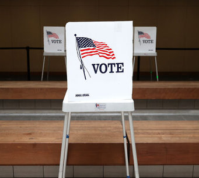

Explore the disconnect between Gen Z and the ballot box.

Low Turnout, High Stakes
As Gen Z emerges as a major voting bloc, participation remains
worryingly low. With critical issues at stake, understanding why
this generation feels alienated is key to addressing the problem.
What Holds Us Back?
From feeling uninformed to mistrust in the political system, young
voters cite numerous reasons for staying away from the polls.
Identifying these barriers is the first step in creating solutions.
Down-Ballot Voting Matters
Voting isn't just about the presidential election. Local races often
affect our lives the most. Understanding down-ballot candidates and
issues can increase engagement and empower voters.
Be the Change
Your vote is your voice. Engaging with elections now can shape the
future you want to see. Learn how small actions can lead to big
changes.